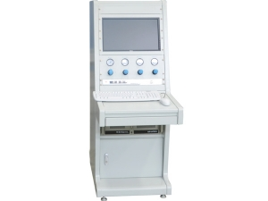

<!doctype html>
<html>

<head>
	<title> NSW13 </title>
	<script src="./js/jquery.min.js"></script>
	<script src="./js/jspsych.js"></script>
	<script src="./js/plugins/jspsych-instructions.js"></script>
	<script src="./js/plugins/jspsych-html-button-response.js"></script>
	<script src="./js/plugins/jspsych-html-click.js"></script>
	<script src="./js/plugins/jspsych-vsl-grid-scene.js"></script>
	<script src="./js/plugins/jspsych-categorize-image.js"></script>
	<script src="./js/plugins/jspsych-image-slider-response.js"></script>
	<script src="./js/plugins/jspsych-survey-multi-choice.js"></script>
	<script src="./js/plugins/jspsych-survey-likert.js"></script>
	<script src="./js/plugins/jspsych-survey-text.js"></script>
	<script src="./js/welcome.js"></script> 
	<link href="./js/css/jspsych.css" rel="stylesheet" type="text/css"></link>
	<script src="https://ajax.googleapis.com/ajax/libs/jqueryui/1.10.3/jquery-ui.min.js"></script>
	<link href="https://ajax.googleapis.com/ajax/libs/jqueryui/1.10.3/themes/black-tie/jquery-ui.min.css" rel="stylesheet" type="text/css"></link>
</head>

<body>
	<div id="welcome"></div>   
</body>

<script>
	//-------------------------------------------------------------------------------- 
	/* randomise conditions and stimuli */

	var groups = ['single pos', 'distant neg'];
	var sampGroups = ['helpful', 'random'];
	var dimCBs = ['GB', 'BG'];
	let group = "" + jsPsych.randomization.sampleWithReplacement(groups, 1) + "";
	let sampGroup = "" + jsPsych.randomization.sampleWithReplacement(sampGroups, 1) + "";
	let dimCB = "" + jsPsych.randomization.sampleWithReplacement(dimCBs, 1) + "";
	// COMMENT THIS OUT WHEN RUNNING FOR REALS
	// console.log('group is: ' + group + ', sampling group is: ' + sampGroup + ', dimCB is: ' + dimCB);

	// experiment parameters
	var numPres = 8; // number of presentations of each stim during training
	var iti = []; 
	iti.train = 2000;
	iti.test = 2000;
	iti.ins = 1000;

	var images = [
		'./img/plain_card.jpg', 
		'./img/marked_card.jpg',
		'./img/plain_card_small.jpg', 
		'./img/marked_card_small.jpg',
		'./img/faded_card_small.jpg',
		'./img/S6_card_small.jpg',
		'./img/checker_card_small.jpg',
		'./img/S1.jpg', 
		'./img/S2.jpg',
		'./img/S3.jpg',
		'./img/S4.jpg',
		'./img/S5.jpg',
		'./img/S6.jpg',
		'./img/S7.jpg',
		'./img/S8.jpg',
		'./img/S9.jpg',
		'./img/S10.jpg',
		'./img/S11.jpg',
		'./img/checker.jpg',
		'./img/shock_machine.jpg'
	];
	jsPsych.pluginAPI.preloadImages(images);

	if (group === 'single pos') {
		var numCards = '1 card';
		var numSymbols = '1 symbol';
		var thisSymbolHelp = 'This symbol has';
		var thisSymbolRand = 'This symbol';
		var cardPlural = 'card';
	} else if (group === 'distant neg') {
		var numCards = '2 cards';
		var numSymbols = '2 symbols';
		var thisSymbolHelp = 'These symbols have';
		var thisSymbolRand = 'These symbols';
		var cardPlural = 'cards';
	}

	// create grid stimuli
	var image_size = 20;
	var grid = {};
	grid.across = 6;
	grid.down = 6;
	grid.width = 516;
	grid.height = 852;
	var row = [-1,-1];
	var col = [-1,-1];
	var chosenCol = [];
	var chosenRow = [];

	function fillArray(value, length) {
	  var arr = [];
	  for (var i = 0; i < length; i++) {
	    arr.push(value);
	  }
	  return arr;
	}

	// create grid stimulus of cards
	grid.row = fillArray('./img/plain_card_small.jpg', grid.across);
	grid.markedrow1 = fillArray('./img/plain_card_small.jpg', grid.across);
	grid.markedrow2 = fillArray('./img/plain_card_small.jpg', grid.across);
	var pattern = [grid.row, grid.row, grid.row, grid.row, grid.row, grid.row];
	var pattern1 = [grid.row, grid.row, grid.row, grid.row, grid.row, grid.row];
	var pattern2 = [grid.row, grid.row, grid.row, grid.row, grid.row, grid.row];
	// faded cards
	grid.faded = fillArray('./img/faded_card_small.jpg', grid.across);
	grid.fadedNew = fillArray('./img/faded_card_small.jpg', grid.across);
	var newPattern = [grid.faded, grid.faded, grid.faded, grid.faded, grid.faded, grid.faded];

	// mark two cards at random in helpful condition in separate grids
	var indices = [0,1,2,3,4,5];
	if (sampGroup === 'helpful') {
		row[0] = jsPsych.randomization.sampleWithoutReplacement(indices, 1);
		col[0] = jsPsych.randomization.sampleWithoutReplacement(indices, 1);
		grid.markedrow1[col[0]] = './img/marked_card_small.jpg';
		pattern1[row[0]] = grid.markedrow1;
		if (group === 'distant neg') {
			row[1] = jsPsych.randomization.sampleWithoutReplacement(indices, 1);
			col[1] = jsPsych.randomization.sampleWithoutReplacement(indices, 1);
			grid.markedrow2[col[1]] = './img/marked_card_small.jpg';
			pattern2[row[1]] = grid.markedrow2;
		}
	}

	// make grid stimuli (second stim presented in Dist Neg group only)
	var grid_stimulus = jsPsych.plugins['vsl-grid-scene'].generate_stimulus(pattern, image_size); 
	var grid_stimulus1 = jsPsych.plugins['vsl-grid-scene'].generate_stimulus(pattern1, image_size);
	var grid_stimulus2 = jsPsych.plugins['vsl-grid-scene'].generate_stimulus(pattern2, image_size);


	//--------------------------------------------------------------------------------  
	/* initialise timeline*/

	var timeline = [];
	var introloop = [];
	var turkcode = (Math.floor(Math.random() * 899999) + 100000).toString();

	//--------------------------------------------------------------------------------  
	/* function to start the jsPsych experiment */

	function startExperiment() {

	// add properties to each trial in the jsPsych data
	jsPsych.data.addProperties({
	  	turkcode: turkcode,
	  	group: group,
	  	sampGroup: sampGroup,
	  	dimCB: dimCB
	});

	jsPsych.init({
	  	timeline: timeline,
	  	preload_images: images,
	  	show_progress_bar: false,
	  	on_finish: function() { 
	  		//endExperiment( jsPsych.data.get().csv() + jsPsych.data.getInteractionData().csv(),
	  		endExperiment( jsPsych.data.get().csv(), 
	  			function() { 
	  				document.write('<div id="endscreen" class="endscreen" style="width:1000px"><div class="endscreen" style="text-align:center; border:0px solid; padding:10px; font-size:120%; width:800px; float:right"><p><br><br><br>All done!<br><br>Your completion code is <span id="turkcode" style="font-weight:bold;font-size:130%">' + turkcode + '</span>. To receive payment for the HIT, return to the Amazon Mechanical Turk page and enter this code. Please contact us if something goes wrong and we\'ll fix it as quickly as possible.</p></div></div>') 
	  			})
	  		}
	  	});
	}

	/* save and finish */ 
	function endExperiment(dataset,callback) {
	  	// jsPsych.data.displayData() // useful for debugging
	  	$.post('submit',{"content": dataset}); // uncomment to save data
	  setTimeout(callback,1000) 
	}

	//--------------------------------------------------------------------------------
	/* change the display property of a set of objects */

	function setDisplay(theClass, theValue) {
		var i, classElements = document.getElementsByClassName(theClass);
		for (i = 0; i < classElements.length; i = i + 1) {
			classElements[i].style.display = theValue;
		}
	}
	//-------------------------------------------------------------------------------- 
	/* instructions text */

	var ins = {};

	ins.train1 = [
		'<div style="text-align:left; border:0px solid; padding:10px;' +
		'                          width:800px; float:none; font-size:100%">' +
		'<p>WELCOME TO THE EXPERIMENT! </p>' +
		'<p>Throughout the experiment, please read all instructions <b>carefully</b> and ' +
		'click on the buttons to go forward or back. ' +
		'You may also need to scroll down on some pages. </p>' +
		'<p>If you complete the task, you will get your payment no matter what. ' +
		'Please think about your predictions and judgements seriously. </p>'
	];

	ins.train2 = [
		'<div style="text-align:left; border:0px solid; padding:10px;' +
		'                          width:800px; float:none; font-size:100%">' +
		'<p>We would like you to imagine that you have come across a strange machine. It appears to have a ' +
		'display on it, as well as a sign that says "WARNING: this machine gives ' +
		'electric shocks!! When you see warning symbols like this ______, do NOT touch!". </p>' +
		'<p>Unfortunately, the area of the label that shows the warning symbols ' +
		'has been scratched off, so you do not know which symbols signal danger. </p>' +
		'<p><b>Your job is to work out what kinds of symbols on the machine signal shock</b>.</p>' +
		'<center></center>'
	];

	ins.train3 = [
		'<div style="text-align:left; border:0px solid; padding:10px;' +
		'                          width:800px; float:none; font-size:100%">' +
		'<p>The experiment is composed of a number of "trials". ' +
		'On each trial, you will be presented with a symbol on the shock machine. ' +
		'You will then make a prediction about whether you think a shock will occur. </p>' +
		'<p>In the FIRST phase of the experiment, you will receive feedback for your predictions ' +
		'about whether a shock occurred or not. </p>' +
		'<p>In the SECOND phase of the experiment you will continue to make predictions for other ' +
		'symbols, but you will NOT receive any feedback. </p>' +
		'<center></center>'
	];

	if (sampGroup === 'random') {

		ins.train4 = [
			'<div style="text-align:left; border:0px solid; padding:10px;' +
			'                          width:800px; float:none; font-size:100%">' +
			'<p>The machine is capable of showing 36 different symbols (each ' +
			'represented by a card below). Some of these symbols lead to SHOCK, ' +
			'and some of these symbols lead to NO SHOCK. </p>' +
			'<p>We are particularly interested in how you make predictions ' +
			'from <b>limited evidence</b>.</p>' +
			'<p>Therefore, although the machine is capable of showing <b>36</b> different symbols, ' +
			'you will only be able to learn about <b>' + numSymbols + '</b> in the FIRST phase. </p>' +
			'<p>' + thisSymbolRand + ' will be <b>randomly selected</b> by you (shortly) from the cards below.</p>' +
			grid_stimulus +
			'<p>You will need to try and learn as much as you can from ' +
			'the first phase, to help you in the second phase. </p>' +
			'<p>First, let&#8217;s check your understanding of the instructions. </p>'
		];
		
	} else if (sampGroup === 'helpful') {

		ins.train4 = [
			'<div style="text-align:left; border:0px solid; padding:10px;' +
			'                          width:800px; float:none; font-size:100%">' +
			'<p>The machine is capable of showing 36 different symbols (each ' +
			'represented by a card below). Some of these symbols lead to SHOCK, ' +
			'and some of these symbols lead to NO SHOCK. </p>' +
			'<p>We are particularly interested in how you make predictions ' +
			'from <b>limited evidence</b>.</p>' +
			'<p>Therefore, although the machine is capable of showing <b>36</b> different symbols, ' +
			'you will only be able to learn about <b>' + numSymbols + '</b> in the FIRST phase. </p>' +
			'<p>' + thisSymbolHelp + ' been <b>chosen</b> by us (we will tell you which ' +
			 cardPlural + ' to select shortly) ' +
			' to help you figure out which symbols lead to shock.</p>' +
			grid_stimulus +
			'<p>You will need to try and learn as much as you can from ' +
			'the first phase, to help you in the second phase. </p>' +
			'<p>First, let&#8217;s check your understanding of the instructions. </p>'
		];	
	}


	if (sampGroup === 'helpful' && group === 'single pos') {
		ins.samp1 = [
			'<div style="text-align:left; border:0px solid; padding:10px;' +
			'                          width:800px; float:none; font-size:100%">' +
			'<p>On the next screen, you will be presented with 36 cards representing the 36 possible symbols ' +
			'that can be displayed on the machine. </p>' +
			'<p>To help make your job easier, we have specifically chosen <b>one symbol</b> (marked with an X) to ' +
			'help you work out which symbols lead to shock (marked with an X). </p>' +
			'<p>When you click on the marked card, your symbol will be revealed, and you can click Continue. </p>' +
			'<center></center>'
		];

		ins.train5 = [
			'<div style="text-align:left; border:0px solid; padding:10px;' +
			'                          width:800px; float:none; font-size:100%">' +
			'<p>PHASE ONE will now begin. </p>' +
			'<p>In this phase, you will learn whether the symbol we have chosen for you ' +
			'leads to shock. ' +
			'We will present the same symbol to you MULTIPLE times. </p>' +
			'<p>On each trial, you will be presented with the symbol shown on the machine. ' +
			'Make a prediction about whether you think a SHOCK will occur. </p>' +
			'<p>Press "L" if you think a SHOCK will occur, or "A" if you think NO shock will occur. </p>'
		];
	} else if (sampGroup === 'helpful' && group === 'distant neg') {
		ins.samp1 = [
			'<div style="text-align:left; border:0px solid; padding:10px;' +
			'                          width:800px; float:none; font-size:100%">' +
			'<p>On the next screen, you will be presented with 36 cards representing the 36 possible symbols ' +
			'that can be displayed on the machine. </p>' +
			'<p>To help make your job easier, we have specifically chosen <b>two symbols</b> (marked with an X) to ' +
			'help you work out which symbols lead to shock. </p>' +
			'<p>When you click on the marked card, your symbol will be revealed, and you can click Continue. </p>' +
			'<center></center>'
		];

		ins.train5 = [
			'<div style="text-align:left; border:0px solid; padding:10px;' +
			'                          width:800px; float:none; font-size:100%">' +
			'<p>PHASE ONE will now begin. </p>' +
			'<p>In this phase, you will learn whether the symbols we have chosen for you ' +
			'lead to shock. ' +
			'We will present the same symbols to you MULTIPLE times. </p>' +
			'<p>On each trial, you will be presented with the symbol shown on the machine. ' +
			'Make a prediction about whether you think a SHOCK will occur. </p>' +
			'<p>Press "L" if you think a SHOCK will occur, or "A" if you think NO shock will occur. </p>'
		];
	} else if (sampGroup === 'random' && group === 'single pos') {
		ins.samp1 = [
			'<div style="text-align:left; border:0px solid; padding:10px;' +
			'                          width:800px; float:none; font-size:100%">' +
			'<p>On the next screen, you will be presented with 36 cards representing the 36 possible symbols ' +
			'that can be displayed on the machine. </p>' +
			'<p>You will need to randomly select <b>' + numCards + '</b> from the display. </p>' +
			'<p>When you click on a card, your symbol will be revealed, and you can click Continue. </p>' +
			'<center></center>'
		];

		ins.train5 = [
			'<div style="text-align:left; border:0px solid; padding:10px;' +
			'                          width:800px; float:none; font-size:100%">' +
			'<p>PHASE ONE will now begin. </p>' +
			'<p>In this phase, you will learn whether the symbol you have selected from the 36 possible symbols ' +
			'leads to shock. ' +
			'We will present the same symbol to you MULTIPLE times. </p>' +
			'<p>On each trial, you will be presented with the symbol shown on the machine. ' +
			'Make a prediction about whether you think a SHOCK will occur. </p>' +
			'<p>Press "L" if you think a SHOCK will occur, or "A" if you think NO shock will occur. </p>'
		];
	} else if (sampGroup === 'random' && group === 'distant neg') {
		ins.samp1 = [
			'<div style="text-align:left; border:0px solid; padding:10px;' +
			'                          width:800px; float:none; font-size:100%">' +
			'<p>On the next screen, you will be presented with 36 cards representing the 36 possible symbols ' +
			'that can be displayed on the machine. </p>' +
			'<p>You will need to randomly select <b>' + numCards + '</b> from the display. </p>' +
			'<p>When you click on a card, your symbol will be revealed, and you can click Continue. </p>' +
			'<center></center>'
		];

		ins.train5 = [
			'<div style="text-align:left; border:0px solid; padding:10px;' +
			'                          width:800px; float:none; font-size:100%">' +
			'<p>PHASE ONE will now begin. </p>' +
			'<p>In this phase, you will learn whether the symbols you have selected from the 36 possible symbols ' +
			'lead to shock. ' +
			'We will present the same symbols to you MULTIPLE times. </p>' +
			'<p>On each trial, you will be presented with the symbol shown on the machine. ' +
			'Make a prediction about whether you think a SHOCK will occur. </p>' +
			'<p>Press "L" if you think a SHOCK will occur, or "A" if you think NO shock will occur. </p>'
		];
	}

	ins.test = ['<div style="text-align:left; border:0px solid; padding:10px;' +
		'                          width:800px; float:none; font-size:100%">' +
		'<p>PHASE TWO will now begin. </p>' +
		'<p>For the next few trials, you will be shown some more symbols, ' +
		'but you will NOT be shown feedback about whether a shock occurred.</p>' +
		'<p>You should continue making predictions about whether you think a shock will occur or not. ' +
		'However, in this phase, you will be making your prediction on a scale ranging from ' +
		'"Definitely NO SHOCK" to "Definitely SHOCK". </p>' +
		'<p>Use your mouse to drag the slider along the scale to make your rating. </p>'
	];

	ins.ques1 = ['<div style="text-align:left; border:0px solid; padding:10px;' +
		'                          width:800px; float:none; font-size:100%">' +
		'<p>We will now ask you some questions about what you have learned in ' +
		'the experiment.</p>' +
		'<p>Please read each option <b>carefully</b> and answer as honestly as you can.</p>' +
		'<p>You will still receive your payment no matter what.</p>'
	];

	ins.ques2 = ['<div style="text-align:left; border:0px solid; padding:10px;' +
		'                          width:800px; float:none; font-size:100%">' +
		'<p>There were <b>two</b> phases in this experiment. In the <b>first</b> phase you ' +
		'received feedback for your predictions, and in the <b>second</b> phase you did ' +
		'NOT receive feedback. </p>' +
		'<p>On the next screen you will see a number of statements. ' +
		'Please rate how much you BELIEVE each statement is true.</p>'
	];
	//--------------------------------------------------------------------------------
	/* prompt text */

	var prompt = {};

	if (sampGroup === 'random') {
		prompt.samp = '<center><p>Please click on a random card to see the symbol behind it</p></center>';
	} else if (sampGroup === 'helpful') {
		prompt.samp = '<center><p>Please click on the marked card to see the symbol we have chosen for you</p></center>';
	}

	prompt.train = '<center><p>The symbol above appears on the machine. What do you ' +
		'think will happen? </p>' +
		'<p>SHOCK - press <b>L</b> </p> <p>or </p> <p>NO SHOCK - press <b>A</b> </p></center>';

	prompt.test = '<center><p>The symbol above appears on the machine. </p>' +
				'<p>What is the likelihood of this symbol leading to a SHOCK?</p></center>';

	//--------------------------------------------------------------------------------
	/* introloop: 
	- includes instructions, sampling manipulation, instruction check, and splash screen
	- loops continuously until participant gets questions correct */

	// instructions
	var trainIns_block1 = {
		type: 'instructions',
		pages: [ 
			ins.train1,
			ins.train2, 
			ins.train3,
			ins.train4],
		allow_keys: false,
		show_clickable_nav: true,
		post_trial_gap: iti.ins
	};
	introloop.push(trainIns_block1);


	// instruction check 
	var Q0_text = "<b>Question 1:</b> The aim of this task is to make predictions " +
	"about whether a SHOCK will occur based on the symbol on the machine:";
	var Q0_answers = ["TRUE", "FALSE"];
	var Q1_text = "<b>Question 2:</b> How many possible symbols can the shock machine show?";
	var Q1_answers = ["6", "36", "60"];
	var Q2_text = "<b>Question 2:</b> The stimuli in the FIRST phase will be:";
	var Q2_answers = ["determined by an algorithm", "chosen by the researchers who designed the experiment", "randomly selected by me"];
	if (sampGroup === 'helpful') {
		var correctstring = '{"Q0":"' + Q0_answers[0] + '","Q1":"' + Q1_answers[1] + '","Q2":"' + Q2_answers[1] + '"}';
	} else if (sampGroup === 'random') {
		var correctstring = '{"Q0":"' + Q0_answers[0] + '","Q1":"' + Q1_answers[1] + '","Q2":"' + Q2_answers[2] + '"}';
	}

	// define instruction check block
	var instructioncorrect = false; 
	var instruction_check = {
		type: "survey-multi-choice",
		preamble: ["<p align='center'><b>Check your knowledge before you begin!</b></p>"],
		questions: [{prompt: Q0_text, options: Q0_answers, required:true,}, 
					{prompt: Q1_text, options: Q1_answers, required: true},
					{prompt: Q2_text, options: Q2_answers, required: true},],
		on_finish: function(data) {
			if( data.responses == correctstring) {
				action = false;
				instructioncorrect = true;
			}
		}
	}
	introloop.push(instruction_check)

	// define a page for the incorrect response
	var showsplash = true;
	var splash_screen = {
		type: 'html-button-response',
		choices: ['Click here to read the instructions again'],
		stimulus: '<center>Unfortunately, at least one of your answers was incorrect.</center>'
	}

	// push it to a conditional node that only shows it if the response was wrong
	var conditional_splash = {
		timeline: [splash_screen],
		conditional_function: function(data) {
	        return !instructioncorrect // skip if correct
	    }
	}
	introloop.push(conditional_splash)

	// finally, add the entirety of this introductory section to a loop node
	var loop_node = {
		timeline: introloop,
		loop_function: function(data) {
	        //var action = true;
	        return !instructioncorrect // stop looping if correct
	    }
	}
	timeline.push(loop_node) // ... and add that to the timeline

	// success trial
	var successtrial = {
		type: 'html-button-response',
		post_trial_gap: 0,
		choices: ['Click here to begin the experiment'],
		stimulus: '<center>Well done!</center>'
	};
	timeline.push(successtrial);

	//--------------------------------------------------------------------------------
	/* sampling manipulation */

	// function that returns current offset position inside scrollable div
	function recursive_offset(obj) {
	    var currOffset = {
	      	x: 0,
	      	y: 0
	    } 
	    var newOffset = {
	      	x: 0,
	      	y: 0
	    }    

	    if (obj !== null) {
	      	if (obj.scrollLeft) { 
	        	currOffset.x = obj.scrollLeft;
	      	}
	      	if (obj.scrollTop) { 
	        	currOffset.y = obj.scrollTop;
	      	} 
	      	if (obj.offsetLeft) { 
	        	currOffset.x -= obj.offsetLeft;
	      	}
	      	if (obj.offsetTop) { 
	        	currOffset.y -= obj.offsetTop;
	      	}
	      	if (obj.parentNode !== undefined) { 
	        	newOffset = recursive_offset(obj.parentNode);   
	      	}
	      	currOffset.x = currOffset.x + newOffset.x;
	      	currOffset.y = currOffset.y + newOffset.y; 
	    }
	    return currOffset;
	}

	// present instructions
	var sampIns_block = {
		type: 'instructions',
		pages: [ins.samp1],
		allow_keys: false,
		show_clickable_nav: true
	};
	timeline.push(sampIns_block);

	// present first grid
	var sampMan = {
		type: 'html-click',
		choices: ['Continue'],
		button_html: '<button class="jspsych-btn">%choice%</button>',
		stimulus: [grid_stimulus1 + prompt.samp],
		data: {
			row: row,
			col: col
		},
		post_trial_gap: 1000
	};
	var getClickNow = false; // so previous mouseclicks aren't registered
	var clickCounter = [0,0];
	var sampTrialNum = 0;
	var clickedOn = false;
	var updateNow = false;
	timeline.push(sampMan);

	// present second grid for Dist Neg group
	if (group === 'distant neg') {
		var sampMan2 = {
			type: 'html-click',
			choices: ['Continue'],
			button_html: '<button class="jspsych-btn">%choice%</button>',
			stimulus: [grid_stimulus2 + prompt.samp],
			post_trial_gap: 1000
		};
		var getClickNow = false; // so previous mouseclicks aren't registered
		var clickCounter = 0;
		var clickedOn = false;
		timeline.push(sampMan2);
	}

	//-------------------------------------------------------------------------------- 
	/* define training stimuli */

	var noShockKeyCode = 65; // keycode for a
	var shockKeyCode = 76; // keycode for l

	var csplus = {
		stimulus: './img/S6.jpg',
		text_answer: 'SHOCK!',
		key_answer: shockKeyCode,
		data: {
			dimVal: 6,
			trialType: 'CS+',
			outcome: 1,
			phase: 'train'
		}
	};

	var csminus = {
		stimulus: './img/checker.jpg',
		text_answer: 'no shock occurred',
		key_answer: noShockKeyCode, 
		data: {
			dimVal: 4,
			trialType: 'CS-',
			outcome: 0,
			phase: 'train'
		}
	};

	if (dimCB === 2) {	// flip dimension
		var csminus = {
			stimulus: './img/S8.jpg',
			text_answer: 'no shock occurred',
			key_answer: noShockKeyCode, 
			data: {
				dimVal: 4,
				trialType: 'CS-',
				outcome: 0,
				phase: 'train'
			}
		};
	}

	if (group == 'single pos') {
		var trainStim = csplus;
	} else if (group == 'distant neg') {
		var trainStim = [csplus, csminus];
	}

	/* randomise training order (note that this is completely random) */
	var trainSeq = jsPsych.randomization.repeat(trainStim, numPres, unpack=false);

	//--------------------------------------------------------------------------------
	/* define training block */

	// present instructions
	var trainIns_block2 = {
		type: 'instructions',
		pages: [ins.train5],
		allow_keys: false,
		show_clickable_nav: true,
		button_label_next: 'Start!',
		post_trial_gap: iti.ins
	};
	timeline.push(trainIns_block2);

	// training phase
	var trainBlock = {
		type: 'categorize-image',
		choices: [shockKeyCode, noShockKeyCode],
		correct_text: '<p><center><font size="+2">Correct! </font></center></p>' +
		'<p><center><font size="+10">%ANS%</font></center></p>',
		incorrect_text: '<p><center><font size="+2">Incorrect </font></center></p>' +
		'<p><center><font size="+10">%ANS%</font></center></p>',
		prompt: prompt.train,
		timing_feedback_duration: 5000,
		post_trial_gap: iti.train,
		timeline: trainSeq
	};
	timeline.push(trainBlock); 

	//-------------------------------------------------------------------------------- 
	/* define test stimuli */ 
	
	var dimVals = [1, 2, 3, 4, 5, 6, 7, 8, 9, 10, 11];
	if (dimCB === "BG") {
		var dimVals = [11, 10, 9, 8, 7, 6, 5, 4, 3, 2, 1];
	}
	
	var testStim = [{
		stimulus: ['./img/S1.jpg'],
		data: {
			dimVal: dimVals[0],
			trialType: 'GS',
			phase: 'test'
		}
	},
	{
		stimulus: ['./img/S2.jpg'],
		data: {
			dimVal: dimVals[1],
			trialType: 'GS',
			phase: 'test'
		}
	},
	{
		stimulus: ['./img/S3.jpg'], 
		data: {
			dimVal: dimVals[2],
			trialType: 'GS',
			phase: 'test'
		}
	},
	{
		stimulus: ['./img/S4.jpg'],
		data: {
			dimVal: dimVals[3],
			trialType: 'GS',
			phase: 'test'
		}
	},
	{
		stimulus: ['./img/S5.jpg'],
		data: {
			dimVal: dimVals[4],
			trialType: 'GS',
			phase: 'test'
		}
	},
	{
		stimulus: ['./img/S6.jpg'],
		data: {
			dimVal: dimVals[5],
			trialType: 'GS',
			phase: 'test'
		}
	},
	{
		stimulus: ['./img/S7.jpg'],
		data: {
			dimVal: dimVals[6],
			trialType: 'GS',
			phase: 'test'
		}
	},
	{
		stimulus: ['./img/S8.jpg'],
		data: {
			dimVal: dimVals[7],
			trialType: 'GS',
			phase: 'test'
		}
	},
	{
		stimulus: ['./img/S9.jpg'],
		data: {
			dimVal: dimVals[8],
			trialType: 'GS',
			phase: 'test'
		}
	},
	{
		stimulus: ['./img/S10.jpg'],
		data: {
			dimVal: dimVals[9],
			trialType: 'GS',
			phase: 'test'
		}
	},
	{
		stimulus: ['./img/S11.jpg'],
		data: {
			dimVal: dimVals[10],
			trialType: 'GS',
			phase: 'test'
		}
	}
	];

	// randomize test order
	var testSeq = jsPsych.randomization.repeat(testStim, 1, unpack=false);

	//-------------------------------------------------------------------------------- 
	/* define test phase */ 

	// present instructions
	var testInstruction_block = {
		type: 'instructions',
		pages: [ins.test],
		allow_keys: false,
		show_clickable_nav: true,
		button_label_next: 'Start!',
		post_trial_gap: iti.ins
	};
	timeline.push(testInstruction_block); 

	var testBlock = {
		type: 'image-slider-response',
		labels: [
			'<p>Certain NO SHOCK </p>' + '<p>(0% chance of shock)</p>',
			'<p>Certain SHOCK </p>' + '<p>(100% chance of shock)</p>',
			],
		button_label: 'Continue',
		min: 0,
		max: 100,
		start: 50,
		step: 1,
		prompt: prompt.test,
		post_trial_gap: iti.test,
		response_ends_trial: true,
		timeline: testSeq
	};
	timeline.push(testBlock); 

	//--------------------------------------------------------------------------------
	/* define questionnaire instructions */ 

	var quesInstruction_block = {
		type: 'instructions',
		pages: [ins.ques1, ins.ques2],
		allow_keys: false,
		show_clickable_nav: true,
		post_trial_gap: iti.ins
	};

	timeline.push(quesInstruction_block); 

	//--------------------------------------------------------------------------------
	/* define questionnaire */ 

	var ques = {};
	ques.likertLabels = ['Definitely untrue', 'Probably untrue', 'Neutral', 'Probably true', 'Definitely true'];

	var questionnaire = {};

	questionnaire.feat = {
		type: 'survey-likert',
		questions: [
		{prompt: 'In the <b>FIRST</b> part of the experiment (with feedback), the <b>SHAPE</b> of the symbol ' +
		'determined whether a shock occurred: ', labels: ques.likertLabels, required: true}, 
		{prompt: 'In the <b>FIRST</b> part of the experiment (with feedback), the <b>COLOR</b> of the symbol ' +
		'determined whether a shock occurred: ', labels: ques.likertLabels, required: true}, 
		{prompt: 'In the <b>SECOND</b> part of the experiment (without feedback), the <b>SHAPE</b> of the symbol ' +
		'determined whether a shock occurred: ', labels: ques.likertLabels, required: true}, 
		{prompt: 'In the <b>SECOND</b> part of the experiment (without feedback), the <b>COLOR</b> of the symbol ' +
		'determined whether a shock occurred: ', labels: ques.likertLabels, required: true}, 
		]
	};
	timeline.push(questionnaire.feat); 

	// forced-choice questions about rules
	questionnaire.rule = {
		type: 'survey-multi-choice',
		questions: [
			{prompt: '<font size="+2">If you had to choose, which of the following do you believe is <b>most</b> correct? </font>',
			options: ['Only a specific bluey-green symbol (and those similar to it) led to shock',
			'Colored symbols led to shock',
			'The greener the symbol, the greater the likelihood of shock',
			'The bluer the symbol, the greater the likelihood of shock'],
			required: true, 
			horizontal: false}
		],
		preamble: '<font size="-1">Please read through each option <b>carefully</b></font>'
	};
	timeline.push(questionnaire.rule); 
	 
	/* manipulation check */ 

	// forced-choice manipulation check
	questionnaire.manCheck = {
		type: 'survey-multi-choice',
		questions: [
			{prompt: '<font size="+2">For the <b>first</b> part of the experiment (with feedback), we <i>told</i> you that there were 36 possible symbols, and <i>your</i> symbols were: </font>',
			options: ['selected randomly (by you picking card/s)', 'selected on purpose (by us to help you)'],
			required: true, 
			horizontal: false},
			{prompt: '<font size="+2">For the <b>first</b> part of the experiment (with feedback), what did you <i>believe</i>? </font>',
			options: ['my symbols were selected randomly', 'my symbols were selected on purpose'],
			required: true, 
			horizontal: false}
		],
		preamble: '<font size="-1">Please be as <b>honest</b> as possible. You will still receive your payment. Your answers may or may not differ between these questions. </font>'
	};
	timeline.push(questionnaire.manCheck); 

	// free-response manipulation check
	questionnaire.manCheckOpen = {
		type: 'survey-text',
		questions: [
			{prompt: 'What do you think the experiment was about? ',
			rows: 8,
			columns: 80}
		],
		preamble: '<font size="-1">Please do not leave this blank. Just a few sentences would be extremely useful to us! </font>'
	};
	timeline.push(questionnaire.manCheckOpen); 

	// free-response pilot question
	questionnaire.open = {
		type: 'survey-text',
		questions: [
			{prompt: 'Do you have any other comments about the experiment? Did anything seem to go wrong or confuse you?',
			rows: 8,
			columns: 80}
		],
		preamble: '<font size="-1">You may leave this blank if you wish. </font>'
	};
	timeline.push(questionnaire.open); 

	// colorblind question
	questionnaire.colorblind = {
		type: 'survey-multi-choice',
		questions: [
			{prompt: 'Finally, do you suffer from any form of color-blindness?',
			options: ['no', 'yes'],
			required: true, horizontal: false}
		],
		button_label: 'Finish'
	};
	timeline.push(questionnaire.colorblind); 

	//--------------------------------------------------------------------------------  
	/* start by running the "welcome.js" script */
	welcome.run();

</script>
</html>